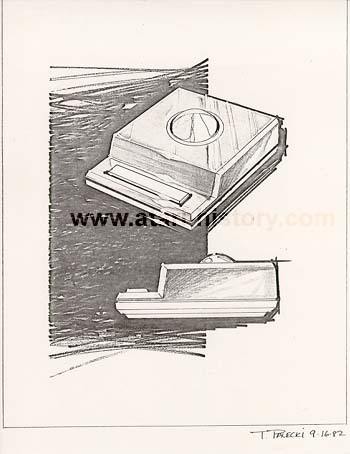
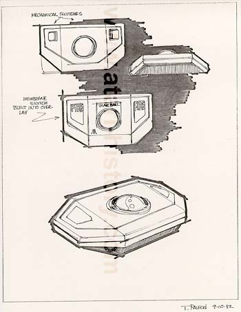
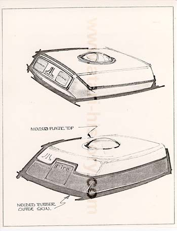
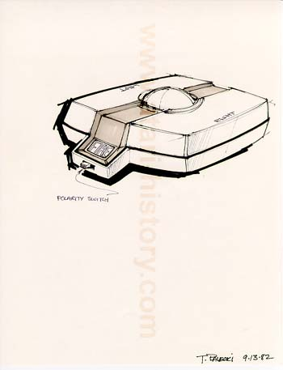

Again, here is another example of the more boxer look, now with
one long fire button bar.

This is very close to the final production design, not fully angled
on
both sides, and no openings underneath for the unit to sit on a lap.

This was an interesting idea. The fire buttom is located for more
of a thumb use the forefinger, the base would be molded in rubber
for easy grip and comfort.

Another variant of the previous design, but with an all plastic case,
fire buttons on both side for left or right handed users via a polarity
switch.